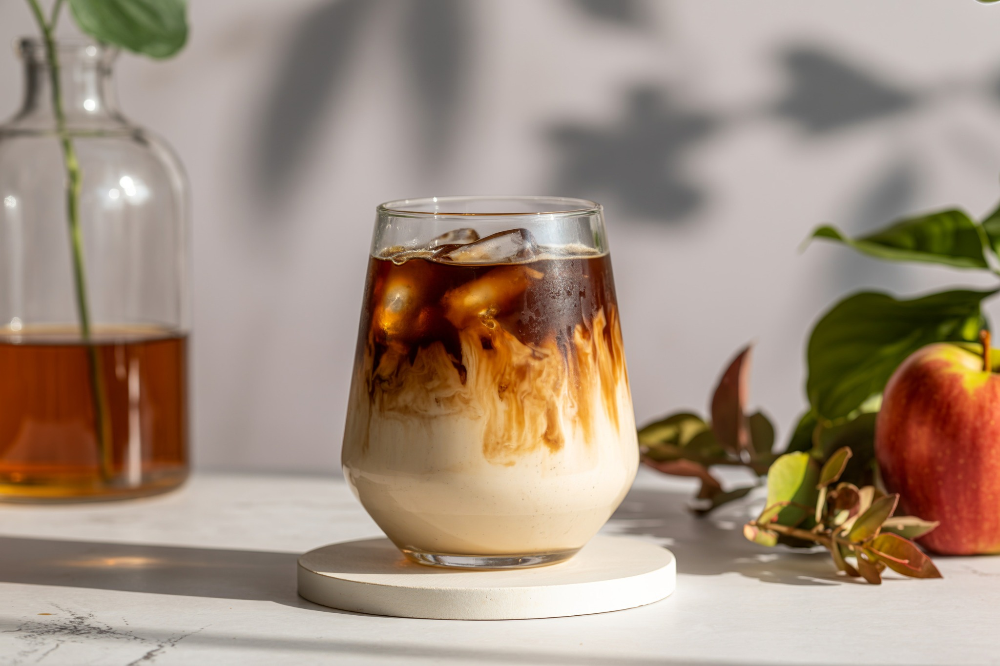

NOVIDADES
12 de outubro de 2026 · 4 min de leitura
Menu de primavera: sabores leves para dias ensolarados
Nosso cardápio fictício ganhou uma seleção de bebidas geladas, combinações cremosas e opções para quem gosta de experimentar algo novo.